Interactive Geometry
Built with the same MediaPipe technology, this geometric system responds to hand gesture rather than proximity. By tracking the distance between your thumb and finger, and the rotation of your wrist, the parameters comprising the geometry vary. This allows complex geometry to be intuitively composed by the participant using their hand movements.
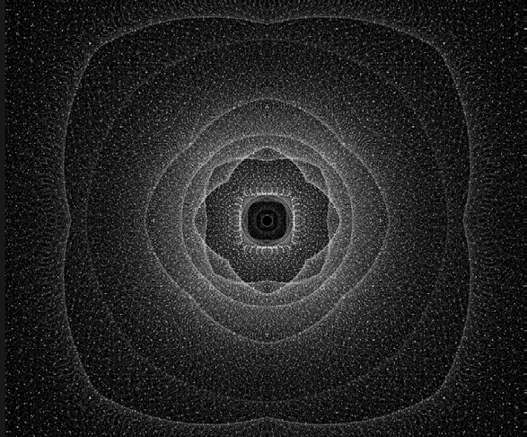
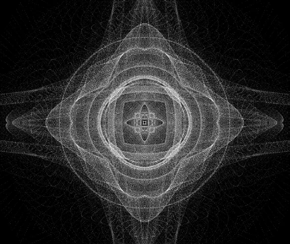
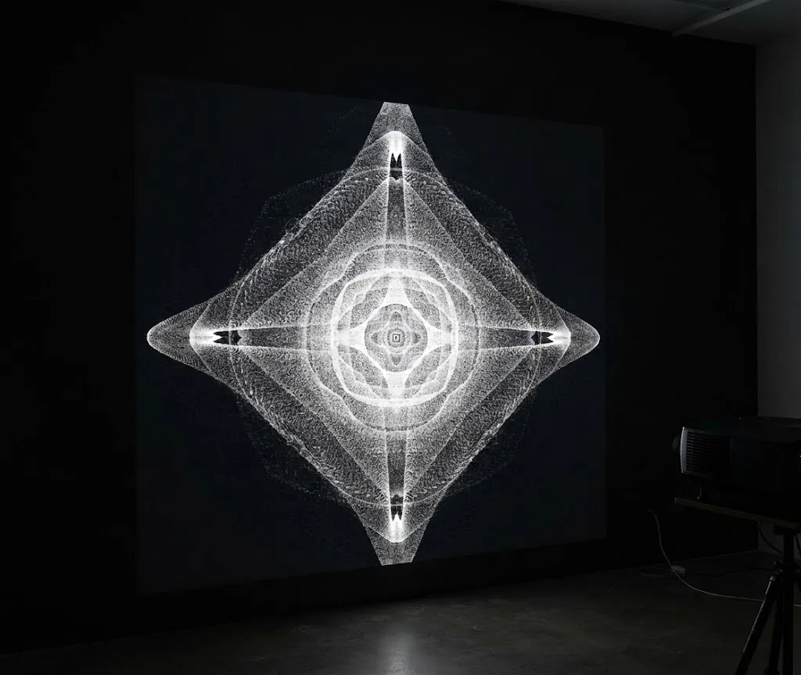
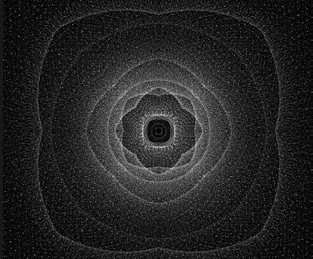
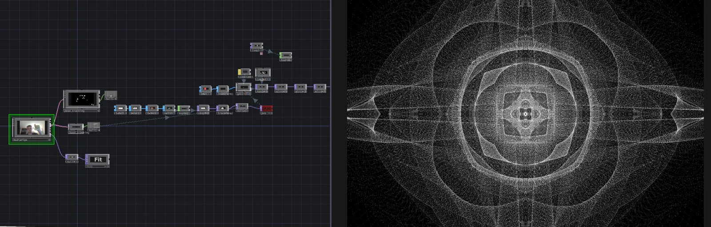
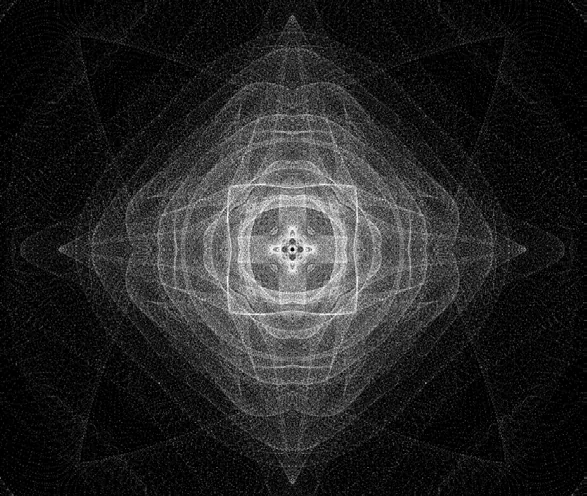
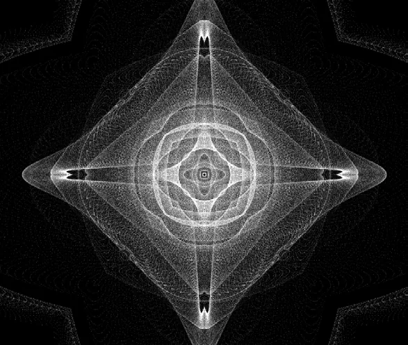
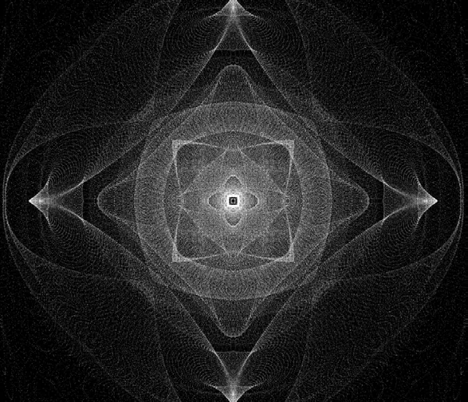
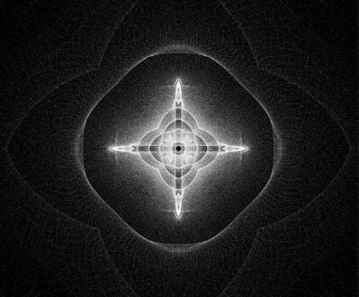
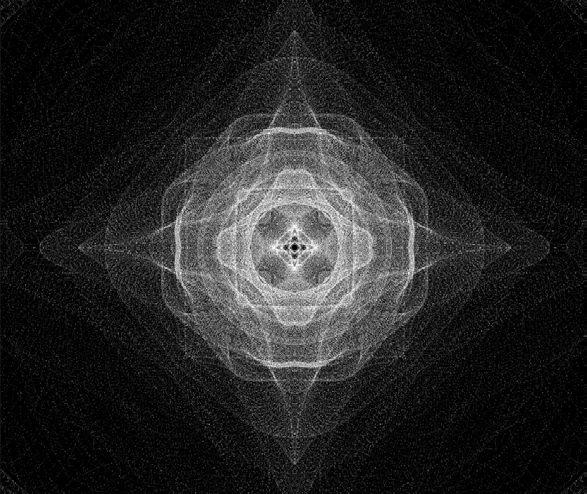
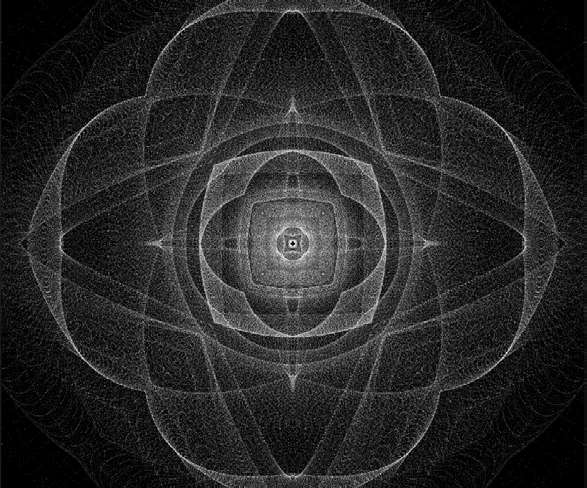
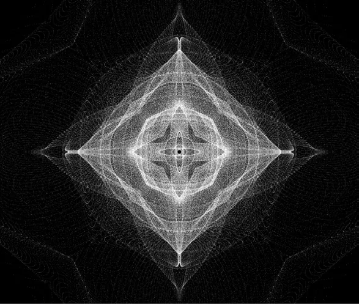
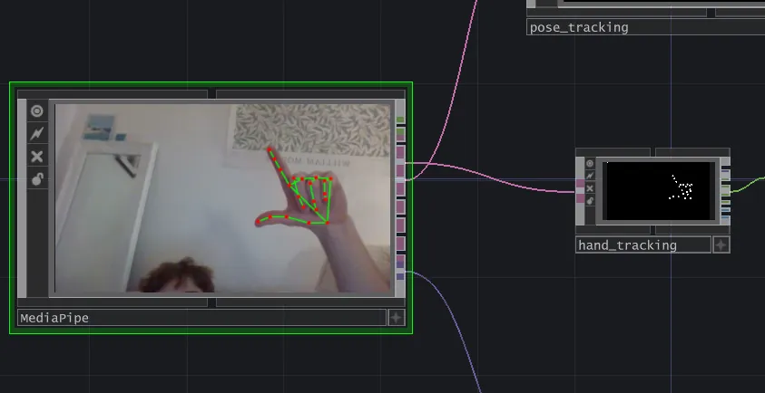